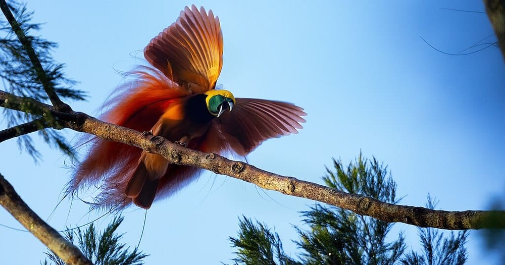

Bird Watching & Goroka Show 2026
September 10–18, 2026
Combine the ultimate birding experience with PNG's premier cultural festival

The first light was just beginning to filter through the canopy when I heard it—a harsh, guttural call that cut through the dawn chorus of the forest. "Wah-wah-wah!" it echoed from the ridge above. I raised my binoculars, scanning the branches where the sound had come from. And then I saw him. A male Raggiana Bird of Paradise, his plumage a cascade of burnished orange and crimson, his tail wires trailing behind him like ribbons of gold. He was perched on a bare branch, his wings spread wide, his head thrown back, his feathers vibrating with the intensity of his call.
For the next hour, I watched as he performed his courtship dance. He hopped from branch to branch, puffing out his chest, shaking his plumes, throwing his body into contortions that seemed to defy physics. A female watched from a nearby perch, her judgment the only thing that mattered. He danced for her, poured his energy into her, offered her the spectacle of his existence. And when she finally flew away, he paused, caught his breath, and began again. This was not a performance for tourists. This was life, survival, the ancient rhythm of the forest.
I have been watching Birds of Paradise for over fifteen years. I have led birding tours to every corner of Papua New Guinea, from the forests of Tari to the mountains of West New Britain. I have seen 32 of the 38 species found in this country. And every time I see a Bird of Paradise, I am transfixed. There is nothing else like it in the natural world. The colors, the feathers, the dances—they seem impossible, like creatures from a dream, like nature decided to show off, to prove that beauty has no limits.
In this guide, I will share everything I have learned about Bird of Paradise watching in Papua New Guinea. The best locations, the species you can expect to see, the best times to visit, the equipment you need, and the cultural significance of these magnificent birds to the people of PNG. Whether you are a dedicated birder with a life list that spans continents or a traveler who simply wants to witness one of nature's greatest spectacles, this guide will help you plan the adventure of a lifetime.
📖 In This Guide
- 🦚 Why Papua New Guinea is the Bird of Paradise Capital
- 🐦 Species of Birds of Paradise in PNG
- 🗺️ Best Locations for Bird of Paradise Watching
- ⛅ Best Time for Bird Watching Tours
- 🔭 What to Expect on a Birding Tour
- 📸 Bird of Paradise Photography Tips
- 🎒 Essential Gear & Equipment
- 🚐 Tour Operators & Guided Experiences
- 💰 Cost of Birding Tours in PNG
- 🏺 Cultural Significance of Birds of Paradise
- 🌿 Conservation & Responsible Birding
- ❓ Frequently Asked Questions
Why Papua New Guinea is the Bird of Paradise Capital of the World
Papua New Guinea is the undisputed global capital for Birds of Paradise. Of the 42 species known to science, 38 are found in Papua New Guinea, with many being endemic to specific regions of the country. This concentration of species is unparalleled anywhere else on earth.
The reason for this incredible diversity lies in PNG's geography and evolutionary history. The island of New Guinea has been isolated for millions of years, allowing its wildlife to evolve along unique paths. The country's rugged terrain—with its high mountain ranges, deep valleys, and diverse forest types—has created countless microhabitats where different species have adapted and diversified. Add to this the fact that much of PNG's forest remains pristine and unexplored, and you have the perfect recipe for one of the world's most extraordinary bird populations.
For birdwatchers, PNG is a holy grail. It is not an easy destination. The forests are remote, the trails are rugged, and the infrastructure is limited. But for those who make the journey, the rewards are beyond measure. There is nothing like watching a Bird of Paradise display in its natural habitat—the first light catching its feathers, the forest waking around you, the sense that you are witnessing something that has happened here for millions of years.
Species of Birds of Paradise in Papua New Guinea
The Birds of Paradise family (Paradisaeidae) is known for its extraordinary sexual dimorphism—males are among the most colorful and elaborately adorned birds in the world, while females are typically drab brown. Here are some of the most sought-after species:
Raggiana Bird of Paradise (Paradisaea raggiana): The national bird of Papua New Guinea, the Raggiana is found throughout the southern and eastern parts of the country. Males have magnificent orange-red plumes that erupt from their sides during courtship displays. The best place to see them is at the Varirata National Park near Port Moresby, where they display regularly at a traditional lek.
King Bird of Paradise (Cicinnurus regius): One of the smallest and most brilliantly colored Birds of Paradise. The male is a jewel of crimson red and white, with two long, wire-like tail feathers tipped with spiraled emerald discs. Found in the lowland forests of the mainland and some offshore islands.
Blue Bird of Paradise (Paradisaea rudolphi): A stunning species with deep blue plumage and long, ribbon-like tail feathers. Found only in the mountains of eastern Papua New Guinea, particularly around the Tari Valley and Mount Hagen.
Greater Bird of Paradise (Paradisaea apoda): The classic Bird of Paradise—large, with bright yellow and maroon plumage and long, streaming tail wires. Found in the lowland forests of the southern region, particularly around the Kiunga area.
Ribbon-tailed Astrapia (Astrapia mayeri): A true spectacle. The male has the longest tail feathers of any bird in relation to body size—the central tail feathers can reach over one meter in length. Found in the highlands, particularly around Mount Hagen and the Tari Valley.
Birds of Paradise Species in Papua New Guinea:
- Raggiana Bird of Paradise
- King Bird of Paradise
- Blue Bird of Paradise
- Greater Bird of Paradise
- Lesser Bird of Paradise
- Ribbon-tailed Astrapia
- Princess Stephanie's Astrapia
- Superb Bird of Paradise
- Magnificent Bird of Paradise
- Twelve-wired Bird of Paradise
- Count Raggi's Bird of Paradise
- Lawes's Parotia
- Wahnes's Parotia
- King of Saxony Bird of Paradise
Best Locations for Bird of Paradise Watching in PNG
Papua New Guinea's vast and varied landscape offers multiple birding hotspots, each with its own specialty species.
Kumul Lodge, Mount Hagen: Perhaps the most famous birding destination in PNG. This high-altitude lodge (2,800 meters) sits in pristine montane forest and offers exceptional viewing of highland species. The lodge's feeding platform attracts Ribbon-tailed Astrapias, King of Saxony Birds of Paradise, and various species of bowerbirds. The access is relatively easy, and the lodge provides comfortable accommodation—a rarity in PNG birding.
Tari Valley, Southern Highlands: This is the place for Blue Bird of Paradise. The valley's forests are home to a healthy population, and local guides know exactly where to find their display sites. Also present are King of Saxony, Ribbon-tailed Astrapia, and various parotia species. The Ambua Lodge, once the premier birding lodge in the region, is currently being rebuilt, but local guides still offer exceptional birding experiences.
Varirata National Park, Central Province: Just a 45-minute drive from Port Moresby, Varirata is the most accessible birding site in PNG. The park's Raggiana Bird of Paradise display ground is one of the most reliable in the country. Arrive early (before dawn) and you will likely see multiple males displaying. Also present are the spectacular Red-cheeked Parrot, various kingfishers, and—if you are lucky—the elusive Dwarf Cassowary.
Kiunga & the Fly River, Western Province: The lowland forests around Kiunga are home to some of PNG's most spectacular species, including the Greater Bird of Paradise, Twelve-wired Bird of Paradise, and King Bird of Paradise. Boat trips along the Fly River and its tributaries offer access to remote forest areas where these birds thrive.
Trobriand Islands, Milne Bay Province: These remote islands are home to their own endemic species, including the Trobriand Bird of Paradise. The culture of the Trobriand people, famous for their traditional dances and ceremonies, adds an extra dimension to any birding trip.
West New Britain: The lowland forests of West New Britain are home to several endemic species, including the magnificent Red Bird of Paradise. This species is found only on the islands of New Britain and the surrounding archipelago, making it a must-see for serious birders.
Best Time for Bird of Paradise Watching Tours
Timing your birding trip is crucial. The best time for Bird of Paradise watching in Papua New Guinea is during the dry season from May to October. The breeding season for most species occurs between June and September, when males are most actively displaying at their leks.
May to October (Dry Season): This is the peak birding season. The weather is relatively stable, with less rainfall and clearer skies. The forest trails are less muddy, and access to remote areas is easier. The breeding displays are at their height, with males performing their courtship dances daily. This is the time to book your tour—slots fill up months in advance.
November to April (Wet Season): Birding is still possible during the wet season, but conditions are more challenging. Rainfall is heavy and frequent, and some roads become impassable. The birds are less active, and the breeding displays may be less frequent. However, this period offers lower prices and fewer crowds, and some birders prefer the lush green landscapes of the wet season.
Time of Day: Birds of Paradise are most active in the early morning, from first light until about 9:00 AM. This is when the males display at their leks, and the forest is alive with calls. Afternoon birding can still be productive, but the action slows down. Plan to be at your chosen site before dawn, and be prepared to sit quietly for several hours.
What to Expect on a Bird of Paradise Watching Tour
A typical birding day in Papua New Guinea starts early—very early. Your guide will wake you before dawn, usually around 4:00 AM. You will have a quick coffee or tea, grab your gear, and head out into the darkness. The goal is to be at your chosen birding site by first light, when the birds are most active.
You will walk. A lot. Even at the most accessible sites like Kumul Lodge and Varirata, you will be hiking along forest trails, often steep, sometimes muddy. You will sit. A lot. Birding is a waiting game. You find a spot, you sit down, you wait. You listen for calls, you scan the branches, you watch for movement. Patience is not just a virtue in birding—it is a necessity.
Your guide will be invaluable. PNG birding guides have an almost supernatural ability to locate birds. They know the calls, they know the display sites, they know the habits of each species. They will lead you to the right spots, help you identify what you are seeing, and share their knowledge of the forest and its inhabitants.
The terrain varies greatly depending on your location. At Kumul Lodge, you will be at 2,800 meters, and the mornings can be cold—near freezing. By midday, the sun can be intense. Dress in layers. At Kiunga, you are in the lowland rainforest, and the heat and humidity can be oppressive. Drink plenty of water, wear light clothing, and take breaks in the shade.
Accommodation on birding tours ranges from comfortable lodges (Kumul Lodge, Varirata National Park) to basic guesthouses in remote areas. Be prepared for limited electricity, no internet, and the simple pleasures of life in the PNG bush.
Bird of Paradise Photography Tips
Capturing the beauty of Birds of Paradise on camera is a challenge that attracts photographers from around the world. Here are my tips for successful bird photography in PNG:
Equipment: A telephoto lens is essential. I recommend at least 300mm, but 400-600mm is ideal for capturing the detail of these birds' extraordinary plumage. A tripod or monopod is essential for stability, especially in the low light of the forest understory. A camera with good high-ISO performance will serve you well.
Settings: Shoot in aperture priority mode (Av) with a wide aperture (f/4 to f/5.6) to blur the background and isolate your subject. Keep your ISO as high as necessary to maintain a fast shutter speed—1/500th of a second minimum for birds in motion. Use continuous autofocus (AI Servo) to track moving birds.
Patience: The best bird photographs come from waiting. Find a good spot near a lek or feeding area, set up your gear, and wait. The birds will come. They may take hours, but they will come. Be quiet, be still, and be patient.
Light: The golden hours of early morning and late afternoon provide the best light for bird photography. The soft, warm light enhances the colors of the birds' plumage and creates beautiful backgrounds. Midday light is harsh and can create unflattering shadows.
Respect: Never disturb a bird for the sake of a photograph. Do not approach leks during display season. Do not use flash when photographing displaying birds. Your priority should always be the well-being of the birds you are photographing.
Essential Gear for Bird of Paradise Watching
Packing for a birding trip in PNG requires careful planning. Here is my recommended gear list:
Optics:
- Binoculars with at least 8x magnification (10x is better for forest birding)
- Spotting scope with tripod for distant viewing
- Camera with telephoto lens (300mm minimum, 400-600mm recommended)
- Extra batteries and memory cards (charging may not be available in remote areas)
Clothing:
- Lightweight, quick-dry pants (2-3 pairs)
- Moisture-wicking shirts (3-4, long sleeves for sun and insect protection)
- Warm fleece or jacket (for highland locations)
- Waterproof rain jacket and pants
- Sturdy, broken-in hiking boots with good grip
- Comfortable camp shoes or sandals
- Wide-brimmed hat
- Neutral-colored clothing (earth tones, greens, browns) to blend in with the environment
Health & Safety:
- High-SPF, reef-safe sunscreen
- Insect repellent with DEET or picaridin
- Personal first aid kit
- Malaria prophylaxis (consult your doctor)
- Anti-diarrheal medication
- Water purification tablets or filter
- Reusable water bottle (2-liter capacity)
Field Guides:
- "Birds of New Guinea" by Thane K. Pratt and Bruce M. Beehler (the definitive field guide)
- Small notebook and pen for recording sightings
- Bird call playback device (use sparingly and only with guide's permission)
Tour Operators & Guided Experiences
Birding in Papua New Guinea is not something you do on your own. The forests are remote, the trails are unmarked, and the local knowledge is essential. I strongly recommend going with a reputable tour operator who knows the birds, the guides, and the logistics.
Bismark Touris Birding Packages: We offer custom birding tours tailored to your interests and time frame. Our guides are experienced local birders who know the best sites for each species. We handle all logistics—permits, transport, accommodation—so you can focus on the birds.
Specialist Birding Tour Operators: Companies like Wicked Adventures, Ecotourism Melanesia, and PNG Birding Tours offer dedicated birding itineraries that focus on specific species and regions. These tours often run during peak season and fill up quickly.
Independent Guides: If you prefer to travel independently, you can hire local guides at major birding sites. At Kumul Lodge, the staff includes experienced bird guides. At Tari, local guides from the village can take you to the best display sites. Always agree on a price before starting, and be prepared to pay in cash (PNG kina).
Cost of Bird of Paradise Watching Tours
Birding tours in Papua New Guinea are not budget adventures. The costs reflect the remote locations, the need for experienced guides, and the logistical challenges of operating in PNG.
Typical Costs: A 7- to 10-day birding tour with a reputable operator typically costs between $4,000 and $8,000 USD per person. This includes domestic flights, accommodation, meals, guides, permits, and transport. International flights to PNG are additional.
What's Included:
- All domestic flights and transfers
- Accommodation in lodges and guesthouses
- All meals
- Experienced birding guides
- Park and conservation area fees
- Ground transport
What's Not Included:
- International flights to Papua New Guinea
- Travel insurance (mandatory)
- Alcoholic beverages
- Personal gear and equipment
- Gratuities for guides and drivers
Booking: Book your birding tour at least 6 to 12 months in advance, especially if you want to travel during peak season (June to September). Many operators offer early bird discounts for bookings made well in advance.
Cultural Significance of Birds of Paradise
Birds of Paradise have been central to the cultures of Papua New Guinea for thousands of years. Their plumes have been used in traditional headdresses, ceremonial regalia, and as symbols of status and power. In many cultures, the birds are seen as spirit beings, messengers from the ancestors, embodiments of beauty and grace.
When European naturalists first encountered Birds of Paradise in the 16th century, they were so extraordinary that many believed they were creatures of myth—birds that lived in the air, never touching the ground, sustained by dew and sunlight. The specimens that reached Europe were often missing their feet, leading to the belief that these birds were indeed "birds of paradise" that never descended to earth.
Today, the Bird of Paradise remains a powerful national symbol. The Raggiana Bird of Paradise appears on the Papua New Guinea flag, its plumes forming the backdrop for the Southern Cross. For the people of PNG, these birds are more than just beautiful animals—they are part of identity, part of history, part of the soul of the nation.
When you watch a Bird of Paradise display, you are witnessing something that has been revered for millennia. Treat the experience with the respect it deserves. Support local communities by hiring local guides, staying in locally owned accommodation, and following the principles of responsible tourism.
Conservation & Responsible Birding
Birds of Paradise face increasing threats from habitat loss, hunting, and the illegal wildlife trade. While PNG's forests remain relatively intact compared to many parts of the world, logging, mining, and agricultural expansion are taking their toll.
As a birder, you can contribute to conservation in several ways:
- Support community-based conservation: Many birding sites in PNG are managed by local communities. By hiring local guides and staying in community-owned accommodation, you provide economic incentives for conservation.
- Follow ethical birding practices: Never disturb displaying birds. Do not use playback excessively. Keep your distance, especially during breeding season. Do not share exact locations of rare species on social media.
- Report illegal activity: If you encounter poaching or the illegal wildlife trade, report it to the PNG Conservation and Environment Protection Authority.
- Support conservation organizations: Organizations like the Papua New Guinea Conservation Foundation and the Wildlife Conservation Society work to protect PNG's forests and wildlife. Consider making a donation.
Frequently Asked Questions: Bird of Paradise Watching Tours PNG
What is the best time for Bird of Paradise watching in PNG?
The best time for Bird of Paradise watching is during the dry season from May to October. The breeding season for most species occurs between June and September, when males are most actively displaying.
How many species of Birds of Paradise are found in Papua New Guinea?
Papua New Guinea is home to 38 of the 42 known Bird of Paradise species, making it the undisputed global capital for these magnificent birds.
Where are the best places to see Birds of Paradise in PNG?
The best locations are Kumul Lodge in Mount Hagen, Tari Valley, Varirata National Park near Port Moresby, and the remote forests of Kiunga and West New Britain. Each location offers different species.
What is the national bird of Papua New Guinea?
The Raggiana Bird of Paradise (Paradisaea raggiana) is the national bird of Papua New Guinea and features prominently on the country's flag and coat of arms.
Do I need special equipment for Bird of Paradise watching?
Binoculars with at least 8x magnification are essential. For photography, a camera with a telephoto lens (300mm minimum, 400-600mm recommended) is ideal. Sturdy hiking boots and neutral-colored clothing are also recommended.
Is PNG safe for birding tourists?
With a reputable tour operator and local guides, PNG is safe for birding tourists. Always follow your guide's advice, stay with your group, and respect local customs. Most birding destinations are in remote areas where communities are welcoming to visitors.
How do I get to PNG for a birding tour?
International flights arrive at Jacksons International Airport in Port Moresby (POM). From there, domestic flights connect to major birding destinations like Mount Hagen, Tari, and Kiunga. Your tour operator will arrange all domestic transport.
A Final Reflection: Why Birds of Paradise?
I have been asked this question many times. Why Birds of Paradise? Why spend days in the forest, sitting in the rain, waiting for a glimpse of a bird that may or may not appear? The answer is simple: because they are worth it.
There is nothing else like them. No other birds, no other animals, no other creations of nature that combine such beauty, such absurdity, such raw evolutionary extravagance. The males of these species have been shaped by millions of years of female choice into creatures that seem designed by a mad artist—feathers that erupt like fireworks, colors that defy description, dances that are equal parts grace and desperation.
When you see a Bird of Paradise display, you are witnessing one of the great spectacles of the natural world. You are watching evolution in action, the relentless pressure of female preference pushing males to ever greater heights of beauty and performance. You are seeing something that has been happening in these forests for millions of years, something that was old when the first humans arrived on this island, something that will continue long after we are gone.
And for the people of Papua New Guinea, these birds are more than a spectacle. They are part of who we are. They appear in our stories, our songs, our ceremonies. They are woven into the fabric of our culture, as much a part of PNG as the mountains and the sea.
I hope you will come. I hope you will stand in the early morning light of the Tari Valley, listening to the calls of the Blue Bird of Paradise echoing through the mist. I hope you will sit at Kumul Lodge, watching as a Ribbon-tailed Astrapia lands on the feeding platform, its tail streaming behind it like a comet. I hope you will be transfixed, as I have been, by the sheer, improbable beauty of these birds.
And I hope you will leave changed. Because Birds of Paradise have a way of doing that. They remind us that the world is still full of wonders, that nature is capable of things we can barely imagine, that there are still places where beauty is not a commodity but a way of life.
Come see them. Before the forests are gone. Before the birds are silent. Come now, while they still dance in the morning light.

🦚 Ready to witness the world's most spectacular birds?
Bismark Touris offers expert-led Bird of Paradise watching tours to PNG's premier birding destinations. Contact us to discuss your interests, experience level, and preferred travel dates.
Book Your Birding Adventure →